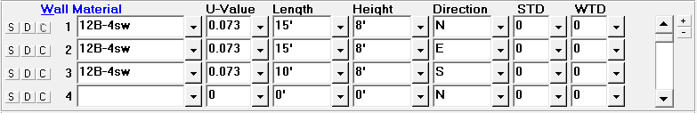

Walls (Room Data, Default Room Data Windows) |
  
|
Walls (Room Data, Default Room Data Windows) |
|

These inputs should only be used if some portion of the wall in a room is exposed to an unconditioned space such as an unconditioned room, a vented room, the outside air or if the wall is an exterior below grade wall. If the entire wall is exposed to a conditioned space (as is normally the case for interior walls, for example), then you should not enter the wall. Note that if you specify a below grade wall, the cooling load due to the wall will be zero. Directly below the word Wall is a column of numbers; these numbers are the wall reference numbers of the various walls of the room and cannot be changed. Note that each glass section and door entry requires a wall reference number.
S Button (Save Material to Default Room): Saves the material to the Default Room Data window. If the material is already in the list of default materials it will be updated if needed.
D Button (Insert Default Material): Copies the default material from the Default Room Data window to the Room Data window. If more than one default material has been defined, a popup menu will let you select which of your default materials to copy. For row 1, this button works like the Copy Above or Default and Room Dimension menu item and toolbar button, while on rows 2 and up it works like the Insert Only Default Room Data menu item and toolbar button.
C Button (Copy Above Material): Copies the material from the above row. This button is disabled for material number 1. For rows 2 and up, works the same as the Copy Above or Default and Room Dimension menu item and toolbar button.
Wall Material: Specifies the Manual J or custom material code. Click on the dropdown help button to display the Wall Material dialog. Note that when you select or type a valid wall construction code, the height of the wall becomes the height of the room (only if the height had been blank).
U-Value: If you enter one of the standard construction codes and wall types Rhvac will display a suggested U-Value for you. This U-Value corresponds to the U-Values listed in Table 4A of Manual J. You also have the option of entering your own U-Value. Rhvac will then use the U-Value you entered when calculating the heat transfer due to walls. Note that the U-Value is equal to the number 1 divided by the R-value.
Length and Height: The length and height of the wall should correspond to the gross area of the wall that is exposed to an unconditioned space (either an unconditioned room or the outside air). In cases where the wall is not rectangular and it is not possible to give a single width and height, you should consider entering the height as 1 foot and the width as the actual area. The main point to remember is that the product of the wall length and width entries should be equal to the actual wall area. The wall width and height can be 0.0 to 999.9 feet each. Note that you should always enter the gross wall area here as Rhvac will automatically subtract the appropriate glass and door areas for each wall section. If a wall consists of two material types (as when a short face brick section is used, for example), you should enter each different material type as a separate wall. The area of each wall section you enter should be equal to the gross area of one material type only.
Note that for basement walls, type 15, where the number of feet below grade is indicated by the number at the end of the construction code, the height includes the above and below grade part of the wall. Rhvac will automatically calculate from the height you enter how much of the wall is above and how much is below grade.
Direction: Specifies the compass direction the wall faces, which affects the cooling load for the wall if the Peak calculation method is used. Also affects the cooling load for any glass items located in this wall.
STD, WTD: To designate this wall as a partition, enter the temperature difference across the wall in the summer (STD) and winter (WTD). If this wall is not a partition leave both of these inputs at zero.
If the space on the other side of this wall is heated but not cooled, enter only the WTD. Or if it is cooled but not heated, enter only the STD.
Note that if you enter a number other than zero for either the STD or WTD, the wall will be automatically treated as a partition. But in the case of basement walls (type 15), only the above grade part of the wall will be treated as a partition. The below grade part will be treated as a regular below grade wall.
If you want to make it so the temperature difference is appropriate for a shaded wall exposed to the outdoor air based on the current indoor and outdoor design conditions, enter -1 for the STD. The calculations will then use the appropriate partition CLTD table from Manual J's Table 4B to determine this wall's sensible gain.
Scrollbar: Use the scrollbar to scroll up and down through the list of walls for the room.
Plus and Minus Buttons: Click the plus and minus buttons to increase or decrease the number of walls visible at a time.